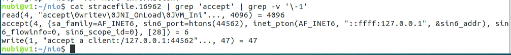
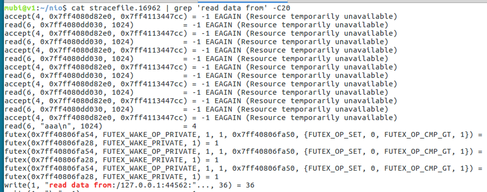
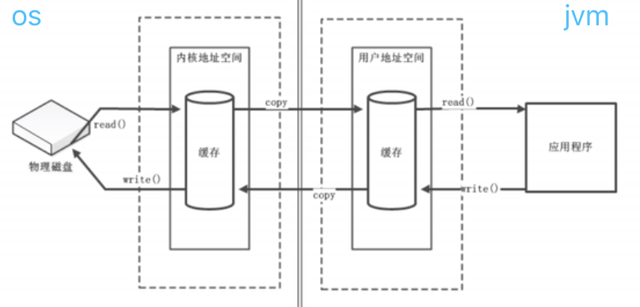
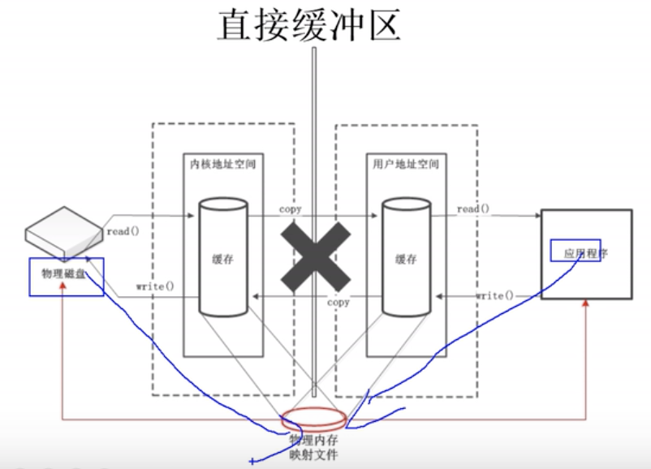

[TOC]
NIO(非阻塞IO)
BIO问题
一个线程负责多个文件的读写，如果按照阻塞的方式，那么必须是按照文件1， 文件2， 文件3...... 顺序的读取这么多文件； 如果是非阻塞方式， 你可以同时发起成百上千个读操作，然后在那个循环中检查， 看看谁的数据准备好了，就读取谁的， 效率就高了。
socket编程：一个socket连接来了， 就创建一个新的线程或者从线程池分配一个线程去处理这个连接，显然线程数不能太多，线程的切换也是个开销；所以让一个线程管理成百上千个sockcet连接，就像管理多个文件一样，这样就不用做线程切换了。
使用多线程的本质
- 充分利用多核（线程是CPU调度的基本单位；进程是系统进行资源分配和调度的一个独立单位）
- 当I/O阻塞系统，但CPU空闲的时候，可以利用多线程使用CPU资源。(现在的多线程一般都使用线程池,这可以让线程的创建和回收成本相对较低。在活动连接数不是特别高（小于单机
1000）的情况下，这种模型是比较不错的，每一个连接线程可以专注于自己的I/O并且编程模型简单，也不用过多考虑系统的过载、限流等问题)
多线程的一些缺点
- 线程的创建和销毁成本很高，在Linux这样的操作系统中，线程本质上就是一个进程，创建和销毁都是重量级的系统函数调用
- 线程本身占用较大内存，比如Java的线程栈一般至少分配512K～1M的空间，如果系统中的线程数过千，恐怕整个JVM的内存都会被吃掉一半
- 线程的切换成本是很高的，操作系统发生线程切换的时候，需要保留线程的上下文，然后执行系统调用。如果线程数过高，可能执行线程切换的时间甚至会大于线程执行的时间，这时候带来的表现往往是系统
load偏高、CPU使用率特别高（超过20%以上)，导致系统几乎陷入不可用的状态 - 容易造成
锯齿状的系统负载。因为系统负载是用活动线程数或CPU核心数，一旦线程数量高且外部网络环境不是很稳定，就很容易造成大量请求的结果同时返回，并激活大量阻塞线程从而使系统负载压力突然过大
结论：当面对十万甚至百万级连接的时候，传统的BIO模型是无能为力的。
附：what defines an active thread
In this context I take "active" to mean that they are executing code. Inactive threads--those that are blocked on I/O calls or awaiting locks--consume only memory resources without affecting the CPU (or only marginally).
However, it really depends on what your threads are doing. If each thread is iterating over numbers to calculate primes, they are fully CPU-bound, and you should really only have one per core to maximize throughput. If they are making HTTP requests or performing file I/O, you can afford to have quite a few per core.
In the end, a blanket statement covering all threads in general without regard for what they are doing is pretty worthless.
I highly recommend the book Java Concurrency in Practice for a high-quality treatment of the topic of concurrent Java programming.
NIO设计思路
BIO 服务端代码（阻塞，要开多线程）
public class BIOServer {
public static void main(String[] args) throws IOException {
ServerSocket ss = new ServerSocket();
ss.bind(new InetSocketAddress("127.0.0.1", 8888));
while(true) {
Socket s = ss.accept(); //阻塞方法
// 每个客户端socket都开一个线程处理
new Thread(() -> {
handle(s);
}).start();
}
}
static void handle(Socket s) {
try {
byte[] bytes = new byte[1024];
int len = s.getInputStream().read(bytes); // 阻塞方法
System.out.println("read data:" + new String(bytes, 0, len));
s.getOutputStream().write(bytes, 0, len);
s.getOutputStream().flush();
} catch (IOException e) {
e.printStackTrace();
}
}
}
BIO的问题
- 系统调用clone创建线程
- 线程是消耗资源的，如JVM默认1M的线程栈内存
- 线程很多的时候，CPU调度，上下文切换频繁
- 阻塞IO，会有CPU时间片的浪费
NIO（socket的SOCK_NONBLOCK选项）
man socket查看socket函数
SOCK_NONBLOCK Set the O_NONBLOCK file status flag on the new open
file description. Using this flag saves extra calls to
fcntl(2) to achieve the same result.
NIO（Java中用ServerSocketChannel实现非阻塞）
如果accept不阻塞，read不阻塞，可以用单线程去解决连接问题，然后遍历这些连接处理即可，不用开多线程
import java.io.IOException;
import java.net.InetSocketAddress;
import java.nio.ByteBuffer;
import java.nio.channels.ServerSocketChannel;
import java.nio.channels.SocketChannel;
import java.util.ArrayList;
import java.util.List;
/**
* @Author mubi
* @Date 2020/7/20 22:41
*/
public class NioServer {
public static void main(String[] args) throws IOException {
ServerSocketChannel ssc = ServerSocketChannel.open();
ssc.socket().bind(new InetSocketAddress("127.0.0.1", 8889));
// 设置 accept 非阻塞（os层面的非阻塞socket）
ssc.configureBlocking(false);
System.out.println("nio server listen on:" + ssc.getLocalAddress());
// 所有的客户端加入到集合，每次while循环都遍历去读取
List<SocketChannel> socketChannelList = new ArrayList<>();
while (true) {
List<SocketChannel> rmList = new ArrayList<>();
// 遍历 socketChannelList, 一个一个处理
for (SocketChannel scTmp : socketChannelList) {
ByteBuffer buffer = ByteBuffer.allocate(1024);
buffer.clear();
try {
int len = scTmp.read(buffer);
if (len > 0) {
System.out.println("read data from:" + scTmp.getRemoteAddress() + ":"
+ new String(buffer.array(), 0, len));
scTmp.write(buffer);
}
} catch (Exception e) {
// 加入遇到异常代表客户端终止连接，再从列表中删除即可
rmList.add(scTmp);
}
}
socketChannelList.removeAll(rmList);
SocketChannel sc = ssc.accept();
if (sc != null) {
// 设置 read 非阻塞，并加入到客户端list中
sc.configureBlocking(false);
socketChannelList.add(sc);
System.out.println("accept a client:" + sc.getRemoteAddress() + " current size:" +
socketChannelList.size());
}
}
}
}

linux下strace追踪NIO系统调用


nio主线程不断的进行accept系统调用（其中没有客户端连接过来，accept返回了-1）

- 客户端成功连接如下

- 使用SocketChannel的read方法是不阻塞的，可以看到，如果没有read到数据，read直接返回了
read(6, 0x7ff4080dd030, 1024) = -1 EAGAIN (Resource temporarily unavailable)，读取到客户端数据read(6, "aaa\n", 1024) = 4

NIO仍有问题
nio能解决BIO的问题：
- 没有多线程问题
- 没有阻塞，没有大量的CPU时间片浪费
但仍然有如下问题
- 大量的系统调用（用户空间内程序不断的遍历fd集合，要切换到内核空间通过系统调用判断fd状态，这会产生大量系统调用）
- 每次轮询一遍fds集合recv(非阻塞)，如果fd没有数据则立即返回错误，有则读取进行处理；每次轮询所有fd（包括没有发生读写事件的fd）会很浪费cpu，可能很多fd都是没有准备好的，没有拷贝,遍历的必要
NIO与IO的区别
Java NIO的非阻塞模式，使一个线程从某通道发送请求读取数据，但是它仅能得到目前可用的数据，如果目前没有数据可用时，就什么都不会获取。而不是保持线程阻塞，所以直至数据变的可以读取之前，该线程可以继续做其他的事情。 非阻塞写也是如此，一个线程请求写入一些数据到某通道，但不需要等待它完全写入，这个线程同时可以去做别的事情。 线程通常将非阻塞IO的空闲时间用于在其它通道上执行IO操作，所以一个单独的线程现在可以管理多个输入和输出通道（channel）。
NIO是以
块的方式处理数据，但是IO是以最基础的字节流的形式去写入和读出的。所以在效率上，肯定是NIO效率比IO效率会高出很多。NIO不再是和BIO一样用
OutputStream和InputStream输入流的形式来进行处理数据的，但是又是基于这种流的形式，而是采用了通道和缓冲区的形式来进行处理数据的。还有一点就是NIO的通道是可以双向的，但是BIO中的流只能是单向的。NIO的缓冲区（其实也就是一个字节数组）还可以进行
分片，可以建立只读缓冲区、直接缓冲区和间接缓冲区，只读缓冲区很明显就是字面意思，直接缓冲区是为加快I/O速度，而以一种特殊的方式分配其内存的缓冲区。
如何结合事件模型使用NIO同步非阻塞特性
NIO的读写函数可以立刻返回，这就给了我们不开线程利用CPU的最好机会：如果一个连接不能读写（socket.read()返回0或者socket.write()返回0），我们可以把这件事记下来，记录的方式通常是在Selector上注册标记位，然后切换到其它就绪的连接（channel）继续进行读写。NIO的主要事件有几个：读就绪、写就绪、新连接到来事件。
interface ChannelHandler{
void channelReadable(Channel channel);
void channelWritable(Channel channel);
}
class Channel{
Socket socket;
Event event;//读，写或者连接
}
//IO线程主循环:
class IoThread extends Thread{
public void run(){
Channel channel;
while(channel=Selector.select()){//选择就绪的事件和对应的连接
if(channel.event==accept){
registerNewChannelHandler(channel);//如果是新连接，则注册一个新的读写处理器
}
if(channel.event==write){
getChannelHandler(channel).channelWritable(channel);//如果可以写，则执行写事件
}
if(channel.event==read){
getChannelHandler(channel).channelReadable(channel);//如果可以读，则执行读事件
}
}
}
Map<Channel，ChannelHandler> handlerMap;//所有channel的对应事件处理器
}
- 如上即最简单的
Reactor模式：注册所有感兴趣的事件到处理器，单线程轮询选择就绪事件，执行事件处理器。
NIO API 的抽象
缓冲区(Buffer)
进程执行I/O操作，即是向操作系统发出请求，中间有个缓冲区，即用户进程-缓冲取-内核进程。进程使用这一机制处理所有数据进出操作。"输入/输出"也就是把数据移入或移出缓冲区。

属性信息
容量(Capacity): 缓冲区能够容纳的数据元素的最大数量。这一容量在缓冲区创建时被设定，并且永远不能被改变。
位置(Position): 下一个要被读或写的元素的索引。位置会自动由相应的
get()和put()函数更新。界限(Limit): 缓冲区的第一个不能被读或写的元素。或者说，缓冲区中现存元素的计数。
标记(Mark): 一个备忘位置。调用
mark()来设定mark=postion。调用reset()设定position=mark。标记在设定前是未定义的(undefined)
0 <= mark <= position <= limit <= capacity
非线程安全
缓冲区并不是线程安全的。如果想以多线程同时存取特定的缓冲区，则需要在存取缓冲区之前进行同步(例如对缓冲区对象进行跟踪)
两个缓冲区被认为相等的充要条件
两个对象类型相同。包含不同数据类型的buffer永远不会相等，而且buffer 绝不会等于非 buffer 对象。
两个对象都剩余同样数量的元素。Buffer 的容量不需要相同，而且缓冲区中剩 余数据的索引也不必相同。但每个缓冲区中剩余元素的数目(从位置到上界)必须相同。
在每个缓冲区中应被Get()函数返回的剩余数据元素序列必须一致。
直接缓冲区 & 非直接缓冲区
- 直接缓冲区：通过
allocateDirect()方法分配直接缓冲区，将缓冲区建立在物理内存中(内存映射文件，减少内核与用户空间的拷贝)
直接字节缓冲区通过调用allocateDirect()工厂方法来创建，此方法返回的缓冲区进行分配和取消分配所需成本通常高于非直接缓冲区；直接缓冲区的内容可以驻留在常规的垃圾回收堆之外，因此，它们对应用程序的内存需求量造成的影响可能并不明显。所以，建议将直接缓冲区主要分配给那些易受基础系统的本机 I/O 操作影响的大型、持久的缓冲区。一般情况下，最好仅在直接缓冲区能在程序性能方面带来明显好处时分配它们。
直接字节缓冲区还可以通过FileChannel的map()方法,将文件区域直接映射到内存中来创建。该方法返回MappedByteBuffer。Java 平台的实现有助于通过JNI从本机代码创建直接字节缓冲区。如果以上这些缓冲区中的某个缓冲区实例指的是不可访问的内存区域，则试图访问该区域不会更改该缓冲区的内容，并且将会在访问期间或稍后的某个时间导致抛出不确定的异常。

- 非直接缓冲区： 通过
allocate()方法分配缓冲区，将缓冲区建立在JVM的内存中
基于缓冲区的一些具体类
- ByteBuffer
- MappedByteBuffer
- CharBuffer
- DoubleBuffer
- FloatBuffer
- IntBuffer
- LongBuffer
- ShortBuffer
- ByteOrder
它们是数据容器
字符集及其相关解码器 和编码器
它们在字节和Unicode字符之间进行转换
通道 Channel
通道：专门处理I/O（跟DMA处理差不多）,是完全独立的处理器(不像DMA还要向CPU申请)，附属于CPU，提高CPU利用率</red>
Channel是一个对象，可以通过它读取和写入数据，本身不存储数据，配合缓冲区使用。拿 NIO 与原来的 I/O 做个比较，通道就像是流，而且它们面向缓冲区的。
通道与流的不同之处在于：通道是双向的。而流只是在一个方向上移动(一个流必须是 InputStream 或者 OutputStream 的子类)， 而 通道 可以用于读、写或者同时用于读写。
通道可以以阻塞(blocking)或非阻塞(nonblocking)模式运行。非阻塞模式的通道永远不会让调用的线程休眠。请求的操作要么立即完成,要么返回一个结果表明未进行任何操作。只有面向流的(stream-oriented)的通道,如 sockets 和 pipes 才能使用非阻塞模式。
Channel的一些类
- FileChannel: 文件通道，用于文件的数据读写
- SocketChannel: 套接字通道，用于socket套接字tcp连接的数据读写
- ServerSocketChannel: 服务端套接字通道，允许我们监听TCP连接请求，为每个监听到的请求，创建一个
SocketChannel套接字通道 - DatagramChannel: 数据包通道，用于UDP协议的数据读写
获取通道
Java针对支持通道的类提供了
getChannel()方法a. 本地IO:
FileInputStream/FileOutputStream RandomAccessFileb. 网络IO:
Socket ServerSocket DatagramSocket在JDK1.7中的NIO2针对各个通道提供了静态方法open()
在JDK1.7中的NIO2的Files工具类的newByteChannel()
选择器 Selector
Selector能够检测多个注册的通道上是否有事件发生，如果有事件发生，便获取事件然后针对每个事件进行相应的响应处理。
这样一来，只是用一个单线程就可以管理多个通道，也就是管理多个连接。这样使得只有在连接真正有读写事件发生时，才会调用函数来进行读写，就大大地减少了系统开销，并且不必为每个连接都创建一个线程，不用去维护多个线程，并且避免了多线程之间的上下文切换导致的开销。
Scatter/Gather(缓冲区操作)
scatter/gather指的在多个缓冲区上实现一个简单的I/O操作，比如从通道中读取数据到多个缓冲区，或从多个缓冲区中写入数据到通道；
scatter（分散）：指的是从通道中读取数据分散到多个缓冲区Buffer的过程，该过程会将每个缓存区填满，直至通道中无数据或缓冲区没有空间；
gather（聚集）：指的是将多个缓冲区Buffer聚集起来写入到通道的过程，该过程类似于将多个缓冲区的内容连接起来写入通道；